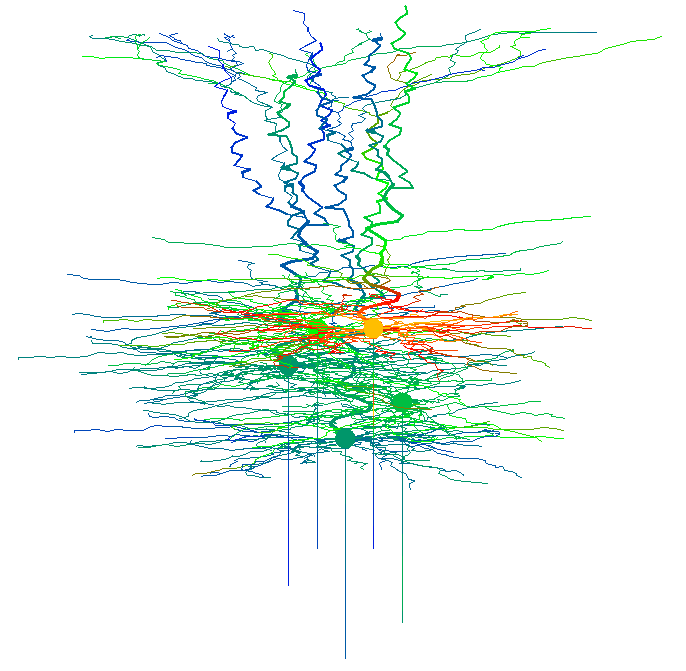
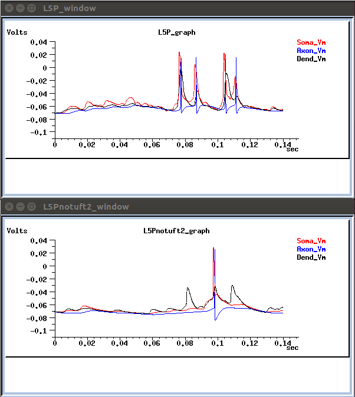
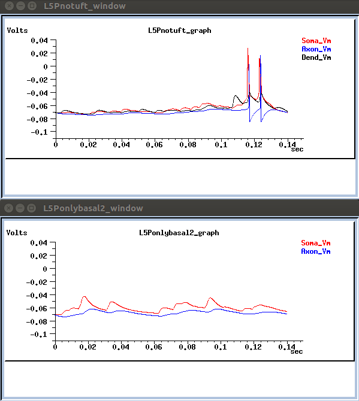
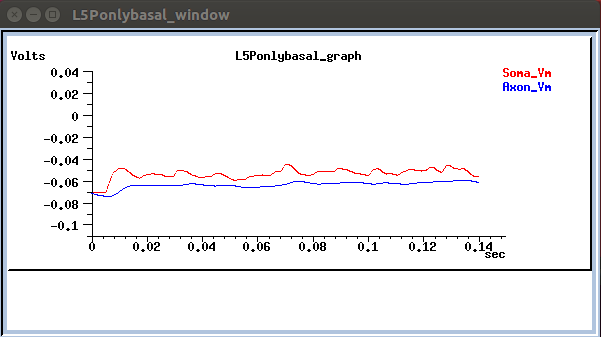

This package contains the Genesis code for the simulations used in Van Dijck G, Seidl K, Paul O, Ruther P, Van Hulle MM, Maex R (2012) Enhancing the yield of high-density electrode arrays through automated electrode selection. Intl. J. Neural Systems 22, 1-19. doi: 10.1142/S0129065712003055 These simulations were conducted with the genesis 2.3 release, on MacPro running OSX. For information and problems, please email Reinoud Maex at one of the following addresses: reinoud.maex@ua.ac.be, r.maex1@herts.ac.uk, reinoud.maex@ens.fr. The program can be run in two ways: - either running the whole network of 5 neurons: go to dir Network_5neuron_IMTEK and type genesis Network.g Once the simulation has started you can type reset step 14000 on the Genesis prompt. Color coded simulated neuronal activity is displayed while time progresses (stills from these "movies" are used in figures 4, 12, 14 in the paper)  Neuronal activity is also depicted in voltage trace graphs:    - or running a single neuron: go to the respective dir (L5P37C, L5P37C-notuft, L5P37C-onlybasal) and type genesis L5P37C.g (L5P37C_notuft.g, L5P37C_onlybasal.g). The dirs of each of the respective neurons are self-contained. For running the network the code has been made more modular: - Electrodes contains all code relevant to the electrodes. - Output contains all code for graphical or ascii-file output. - Fibres contains all code concerning the wiring. Finally, Granule_cell is only a subsidiary dir containing the code for the channels used by the inhibitory neurons. Usually you will run the program in one of two modes: either as a test using online graphical output (xcell, xgraph, etc) or for the real simulation saving all output (membrane potentials, electrode potentials, etc) to ascii files. Selecting the mode can easily be done by (un-)commenting out the respective genesis commands.